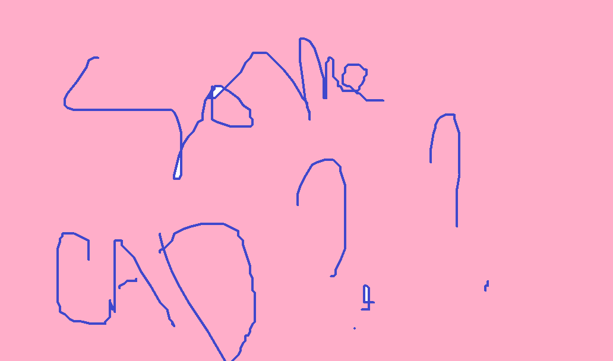

Mechanical System
Our final mechanical system involves a body constructed of foam, acrylic, metal ballast, and carbon fiber sheet with three actuated joints, designed to swim forwards through biologically-inspired vortex-shedding motion.
Actuation
A detailed description of your mechanical design (CAD images/renderings are appropriate) and any necessary analysis.
overview of different mechanisms we tried? And final pattern of motion. Video of being able to get the fish moving with the actuation, and then say that the motion based off this was built off of in code and simulation.
For forward motion, we followed the biological mechanism of vortex shedding and designed swimming surfaces that move to push against water. The three actuated swimming segments attached to our fish head rotate back and forth following radio control or Arduino-controlled optimized motion patterns, which effectively generates forward motion. A small turning radius (40 cm in intermediate iterations) is achieved by setting the head and final actuated joint and moving only the middle swimming segment.

Prototyping
A detailed description of your mechanical design (CAD images/renderings are appropriate) and any necessary analysis.
lead into next section via talking about balancing, by adding weight and foam as needed, as this was far easier than modeling.
Body

A detailed description of your mechanical design (CAD images/renderings are appropriate) and any necessary analysis.
more cad? and talking about balancing, and basically the process of getting everything balanced. And the connections, waterproofing, lay-up operation, etc...